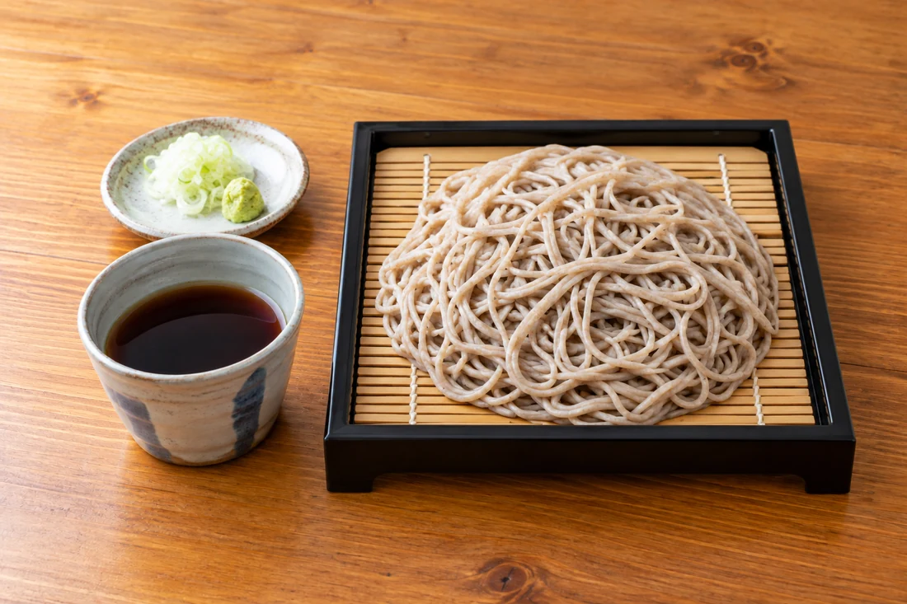
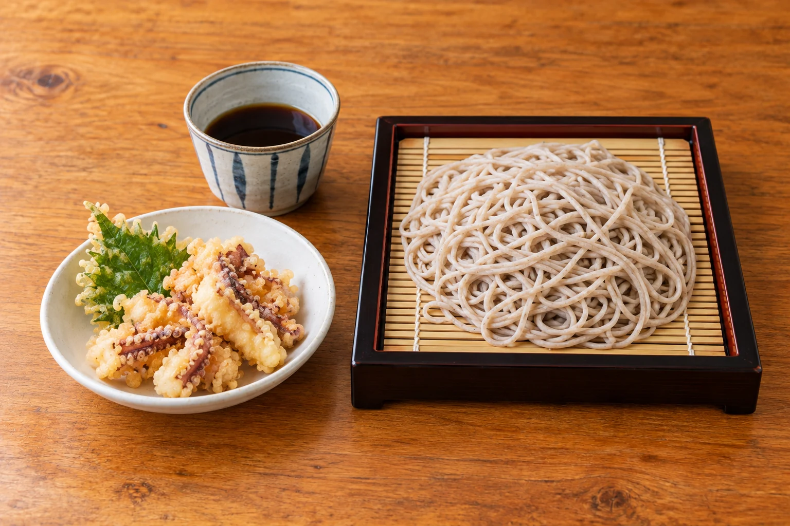
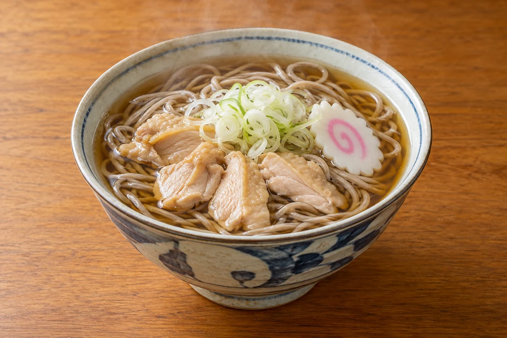

01
もりそば
冷たく締めたそばを、つけつゆで。

そばとげそ天、うれしい組み合わせ。
そば処 やぶのごはん
まだまだ、麺の楽しみ
天かすや彩りの具材を添えて。

鶏のだしが香る、あたたかな一杯。
料理の内容や提供状況は、季節などにより変わります。そば・小麦を含む料理があります。
ご利用の前に
お席や当日の営業、メニューについては
お気軽にお電話ください。
食物アレルギーやお苦手な食材は事前にお知らせください。対応の可否は店舗へご確認ください。
11時から昼の営業をしています。閉店時刻や夜の営業は変更になる場合があるため、ご来店前にお電話でご確認ください。
駐車場があります。場所や空き状況は店舗にご確認ください。
鳥中華などの中華麺もございます。当日のメニューと提供状況は店頭でお確かめください。
そば・小麦などのアレルギーや、召し上がれない食材は注文前にお知らせください。対応の可否は店舗へご確認ください。
ACCESS / 店舗案内
営業日・営業時間は変更になる場合があります。お出かけ前にお電話でお確かめください。
Google マップを開く地図から経路をご確認いただけます。
天童・中里 / そばと中華